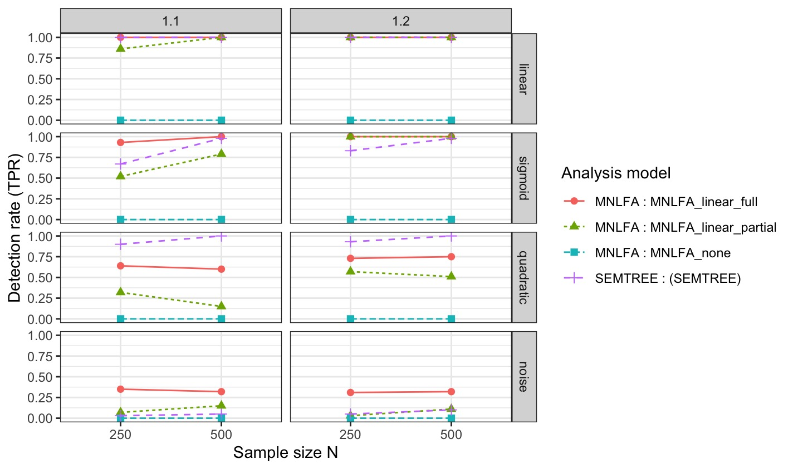

SEMi-Complete by Design
A Monte Carlo simulation to assess Measurement Invariance in Moderated Nonlinear Factor Analysis and SEM Trees
Why Care About Measurement Invariance?
Measurement invariance (MI) is a prerequisite for meaningful comparisons of latent constructs across groups (Cheung and Rensvold 2000; Meredith 1964).
Violations of MI imply that observed group differences may reflect measurement artifacts rather than substantive differences in the underlying constructs(Putnick and Bornstein 2016).
- Without MI, conclusions about group differences in means, variances, or relations are not statistically justified(Putnick and Bornstein 2016).
Why Care About Measurement Invariance?
- Measurement invariance is often implicitly assumed rather than empirically tested
- The majority of psychological studies do not test for MI (Maassen et al. 2025; Rohrer and Paulewicz 2025)
- When MI is tested, reporting standards are frequently insufficient for replication (Putnick and Bornstein 2016; Maassen et al. 2025)
- Rohrer and Paulewicz (2025) also note that only <5% of comparison studies reported MI in a recent review.
- As a result, the validity of many reported group comparisons remains unclear.
Empirical Evidence on MI Violations
Recent literature reviews highlight the severity of the problem:
“None of the reported MI tests were reproducible, and only 26% of the 174 newly performed MI tests reached sufficient (scalar) invariance, with MI failing completely in 58% of tests.”(Maassen et al. 2025)
- Additionally, in approximately 50% of cases where configural invariance was rejected, the number of latent factors differed between groups, indicating fundamentally different measurement structures (Maassen et al. 2025).
SEM Trees
Structural Equation Model (SEM) Trees integrate confirmatory SEM with recursive partitioning (Brandmaier et al. 2013, 2016; Arnold, Voelkle, and Brandmaier 2021).
Key characteristics:
- Automatically detect heterogeneity in model parameters
- Identify subgroups in which measurement or structural parameters differ
- Allow data-driven detection of non-invariance
SEM Trees are particularly useful when grouping variables are unknown or continuous and if you have plenty.
Advantages and Limitations of SEM Trees
Strengths
- Flexible, exploratory identification of non-invariance
- Can handle complex interaction structures
- Transparent subgroup definitions
- Should perform well with sigmoid effects
Limitations
- Risk of overfitting without cross-validation
- Results depend on splitting criteria
- Less suitable for strict confirmatory hypothesis testing
- The functional form could be harder to retrieve
MNLFA (Moderated Nonlinear Factor Analysis)
Moderated Nonlinear Factor Analysis (MNLFA) extends traditional factor models by allowing:
- Item parameters (loadings, intercepts)
- Factor means and variances
to vary continuously as functions of observed covariates (e.g., age, gender, SES) (Kolbe et al. 2024; Curran et al. 2014). This means MI is conceptualized as the moderation of certain parameters by a external variable.
This therefore directly models measurement non-invariance instead of testing it sequentially (Kolbe, Jorgensen, and Molenaar 2021; Curran et al. 2014).
Strengths and Challenges of MNLFA
Strengths
- Handles both categorical and continuous moderators
- Avoids arbitrary group discretization
- Provides fine-grained modeling of parameter variation
- Is suited for nonlinear relationships
Limitations
- High model complexity
- Strong distributional and functional form assumptions
- Requires large sample sizes and careful model specification
MNLFA is most appropriate when theory suggests systematic moderation of measurement parameters.
Exploratory vs. Confirmatory Approaches
So the question arises when to use which method for MI testing?
- I would argue that this is a question of the substantive nature of your research question
- MI testing should be pursued with rigor and diligent documentation
- However it is not necessarily always a prerequisite to have Residual Invariance established
- So how far you are progessed in a theoretical foundation is key
- And what question you want to answer also determines the required invariance level
Simulation
Monte Carlo simulation to compare SEM trees and MNLFA
- I am about to preregister the simulation, using the template from Siepe et al. (2024).
- Data will be generated parametrically
- Different population models
- Single-Factor cfa model with four manifest indicators \[
\mathbf{x} = \boldsymbol{\nu}(Z) + \boldsymbol{\Lambda}_x(Z)\,\eta + \boldsymbol{\varepsilon},
\qquad
\boldsymbol{\varepsilon} \sim \mathcal{N}(\mathbf{0}, \boldsymbol{\Theta}_\varepsilon).
\]
- Two-Factor cfa model with four manifest indicators \[ \mathbf{x} = \boldsymbol{\nu}_x(Z) + \boldsymbol{\Lambda}_x(Z)\,\eta_1 + \boldsymbol{\varepsilon}(Z), \] \[ \mathbf{y} = \boldsymbol{\nu}_y(Z) + \boldsymbol{\Lambda}_y(Z)\,\eta_2 + \boldsymbol{\delta}(Z), \]
- Single-Factor cfa model with four manifest indicators \[
\mathbf{x} = \boldsymbol{\nu}(Z) + \boldsymbol{\Lambda}_x(Z)\,\eta + \boldsymbol{\varepsilon},
\qquad
\boldsymbol{\varepsilon} \sim \mathcal{N}(\mathbf{0}, \boldsymbol{\Theta}_\varepsilon).
\]
Simulation
Let \(M \sim \mathcal{U}(-1,1)\) denote a bounded continuous covariate.
The effective moderator is defined as: \[ Z = h(M), \]
Linear:
\[ h(M) = M \]
Sigmoid:
\[ h(M) = a + \frac{b-a}{1 + \exp\!\bigl(-k(M-c)\bigr)}, \qquad a=-1,\; b=1,\; c=0,\; k>0. \]
Quadratic:
\[ h(M) = 2M^2 - 1 \]
Simulation
Analytical Model Study 1

Simulation
Analytical Model Study 2
 Model 2.0
Model 2.0
 Model 2.1
Model 2.1
 Model 2.2
Model 2.2
 Model 2.3
Model 2.3
Study-Specific Factors
Study 1: Functional-Form Misspecification
Focuses on moderator misspecification and data-related conditions:
- Analysis model: Linear or quadratic moderator
- Sample size: \(N \in \{300, 500, 700, 1000\}\)
- Indicator reliability: .60, .70, .80, .95
- No structural misspecification:
Factor structure and residuals match the generating model
Study-Specific Factors
Study 2: Structural Misspecification
Extends Study 1 by introducing factor-structure misspecification:
Same DGM and moderator variation, sample size and reliability as Study 1
Analysis model: Linear or quadratic moderator
Structural misspecification (between-subjects):
- None: Correct factor structure
- Cross-loadings:
Items \(y_5\), \(y_6\) load on a second factor \[ \lambda^{(CL)}_5,\; \lambda^{(CL)}_6 \in \{0.3, 0.4\} \] - Correlated residuals:
\[ \text{Cov}(\varepsilon_1, \varepsilon_5),\; \text{Cov}(\varepsilon_2, \varepsilon_6) \in \{0.2, 0.3\} \] - Combined: Cross-loadings and residual correlations
- None: Correct factor structure
Trial Run: Data-Generating Model
Measurement model
Single-factor CFA with one latent factor \(\eta\) and four indicators \(y_1\)–\(y_4\): \[
\mathbf{y} = \boldsymbol{\nu}(Z) + \boldsymbol{\Lambda}_y(Z)\,\eta + \boldsymbol{\varepsilon}(Z)
\]
Moderator variable
The moderator \(Z\) is defined as a transformation of \(X\):
- Linear: \(Z = X\)
- Quadratic: \(Z = X^2\)
- Sigmoid: \[ Z = \frac{1}{1 + \exp\!\bigl(-\gamma(X - c)\bigr)} \]
Baseline parameters
- Factor loadings: \(\lambda = 0.70\)
- Target reliability: \(0.80\)
True moderation patterns (model_type)
- NULL: No moderation
- 1.1: Loadings of \(y_1\)–\(y_4\) moderated
\[ \delta = 0.20 \] - 1.2: Loadings of \(y_1\), \(y_2\) moderated only
\[ \delta = 0.20 \]
Design factors
- Sample size: \(N \in \{250,\; 500\}\)
- Replications: \(100\) per condition
Trial Run: Analytical Models
SEM Trees (nonparametric detection)
Baseline CFA \[ \eta \sim y_1 + y_2 + y_3 + 1\cdot y_4 \]
Predictors
- \(M\): true moderator
- \(M_2\): noise covariate
Evaluation criteria
- Splits on \(M\) (true positives)
- No splits on \(M\) under NULL
- No splits on \(M_2\) (false positives)
MNLFA (parametric detection)
Linear full moderation
- \(\delta\)-loadings on \(y_1\), \(y_2\), \(y_3\)
- \(y_4\) fixed as marker
Linear partial moderation
- \(\delta\)-loadings on \(y_1\), \(y_2\) only
None (negative control)
- Unmoderated CFA
Preliminary Results
 True-Positive Rate
{kind=link}
 False-Positive Rate
False-Positive Rate
Questions & Concerns
- How do I ensure that the comparison is fair, the best?
- What conditions would you like to see simulated?
- What should I consider/ keep a eye on when programming it?
- Did I forget something in the simulation set-up?
- This is huge currently - what can I drop?
- What makes a simulation most useful in your opinion?